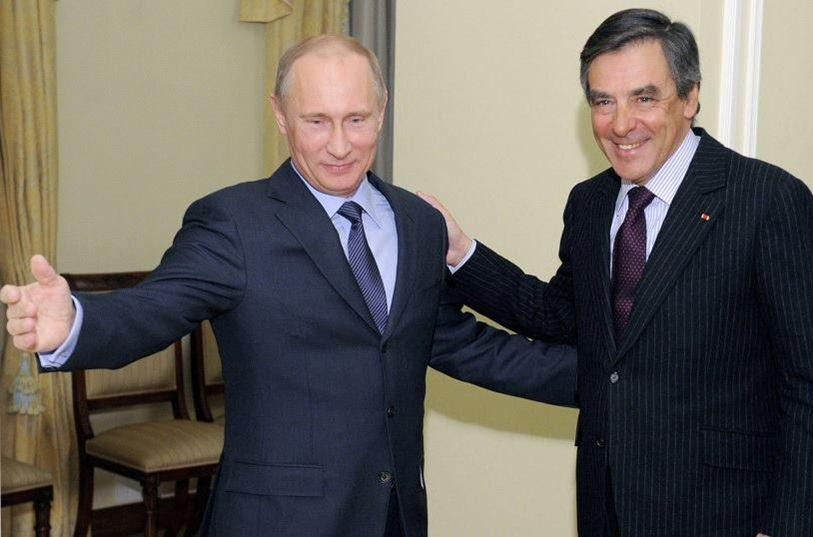
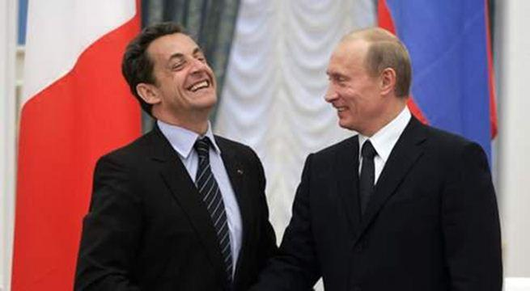
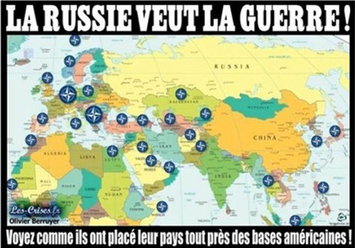

La Russie et la France ont tout pour être les alliés parfaits. L’absence de frontières communes exclut toute forme de conflit larvée, comme il a pu en exister entre la France et les Empires allemands pendant des siècles. Les Français et les Russes ne sont pas rivaux sur les mers et leur position respective aux extrémités est et ouest de l’Europe continental devrait en faire naturellement les deux piliers principaux de l’une véritable structure de coopération et de sécurité en Europe.
I La relation franco-russe de l’époque moderne à nos jours
Dans l’Histoire de France, la Russie a toujours été la possibilité de rééquilibrer la puissance germanique, comme ce fut le cas lors de la guerre de Sept Ans, en 1759, lorsque les armées russes écrasèrent les armées prussiennes. Suite à cette victoire et pendant 250 ans, la règle qui s’imposa à la France, est que pour triompher en Europe, il faut être allié de la Russie. C’est sans doute ce que rechercha sans succès Napoléon Ier auprès de l’Empereur Alexandre, qui préféra à cette occasion l’alliance anglaise.
La politique étrangère de son neveu, Napoléon III, s’avéra du début à la fin d’une absurdité assez unique dans l’Histoire de France.
L’aventure criméenne isola la France pour 40 ans de son allié naturel en Europe. La IIIème République s’avéra plus avisée vis-à-vis de la Russie, ce qui sauva la France à deux reprises pendant la Première Guerre Mondiale. Pas de contre-offensive sur la Marne en 1914 ou de victoire à Verdun en 1916, sans la poussée de l’armée russe contre l’Allemagne à ces diverses occasions. La France paya cher de ne pas avoir son allié russe, lorsque l’Allemagne balaya son armée en moins de deux mois au printemps 1940. Staline qui ne respectait que la force ne prêta que peu d’intérêt à une France affaiblie qui n’était que l’ombre d’elle-même, et il fallut attendre sa mort, puis l’arrivée du Général De Gaulle à la tête de l’Etat français pour que les Soviétiques prennent de nouveau en considération la France comme une puissance d’équilibre de nouveau influente en Europe. Cette position équilibrée fut maintenue par le dernier Président français de la Guerre Froide, François Mitterrand, qui fut sans doute la dernière période de l’Histoire récente où la France eut une véritable politique étrangère, fut-ce-t-elle contestable. Les années 90, pour la Russie, comme pour la France furent synonymes de déclassement, principalement dans la gestion catastrophique de la crise yougoslave où ils se révélèrent incapables d’empêcher Allemands et Américains de mettre le pays à feu et à sang et d’entretenir pendant 10 ans une guerre civile en plein centre de l’Europe.
Le conflit en Géorgie, ainsi que la vente des BPC Mistral à la Russie sont autant de signe que la France, bien que faisant toujours partie de l’alliance atlantique souhaite rééquilibrer sa position en Europe.
L’arrivée au pouvoir du parti socialiste en France correspond à un hiver pour la relation bilatérale franco-russe. Il faut remonter au gouvernement Jospin (1997-2002) pour retrouver une telle hostilité de la France vis-à-vis de la Russie. Le gouvernement russe subissait alors les leçons de morale sur le conflit tchétchène de la part d’une diplomatie française totalement ignorante de la réalité du conflit. A cela s’était ajouté le bombardement de la Yougoslavie par la France dans le cadre de son soutien au groupe islamisto-mafieux albanais de l’UCK. La crise de la relation bilatérale actuelle est une réplique de cette période de déclin diplomatique français. Le gouvernement socialiste empêtré dans son dogmatique messianisme post-moderne est parfaitement incapable de comprendre le fonctionnement de l’Etat russe, dont la défense de ses propres intérêts est la seule préoccupation. L’incompréhension de la Russie ne concerne pas que les élites de gouvernement socialistes mais également les élites médiatiques, dont l’influence, quoique déclinante se maintient dans la majorité de la population française dont l’approche critique des médias dit « mainstream » reste peu développée. La politique étrangère brouillonne et primairement hostile conduite par Laurent Fabius trouve ainsi une caisse de résonnance auprès des élites médiatiques françaises incapables de penser le monde ni dans son immédiateté ni dans la longue durée.
En rompant avec la réalité politico-stratégique, ces élites gouvernementales et médiatiques ont par là même rompu avec les élites économiques, qui elles sont définitivement sorties des idéologies du XXème siècle. Les acteurs économiques français en Russie considèrent ainsi l’action de leur gouvernement comme un véritable sabotage, auquel ils s’efforcent de mettre un terme, en attendant un retour au réalisme de la politique française. Les acteurs économiques français constituent ainsi une permanence de la diplomatie française traditionnelle et souveraine. Cette position trouve un écho de la part des élites russes, qu’elles soient gouvernementales, économiques ou culturelles. La diplomatie russe s’inscrit dans la longue durée et y place la relation franco-russe. Elle attend patiemment que la France remette comme principe premier la défense de ses propres intérêts, ce qui conduira automatiquement un rapprochement avec la Russie, et pourquoi pas à une reconstruction commune du système de sécurité en Europe.
II Deux modèles opposés
Il serait erroné de faire reposer l’hostilité des élites politiques et médiatiques françaises uniquement sur des conceptions politiques et géopolitiques différentes. La rupture est bien plus profonde que cela et largement philosophique.
La Russie incarne un modèle totalement alternative au modèle français issu de la modernité.
La Russie contemporaine s’oppose en tout au post modernisme des élites françaises, dans sa vision de l’Etat, de la Nation, de la société, de l’économie et des affaires internationales. Pour Vladimir Poutine l’Etat est une structure organisatrice dont la légitimité repose sur sa souveraineté. La souveraineté doit être politique, économique et sécuritaire. L’aspect politique est le plus simple à énoncer ; Moscou ne signera jamais un traité qui empiètera sur les fonctions régaliennes de l’Etat. C’est ce que l’on a pu constater sur l’action intentée par les actionnaires de Yukos contre la Russie devant le tribunal international de La Hague. La participation de la Russie à ce tribunal datait de l’époque Eltsine, l’accord avait été signé sans être ratifié par le parlement. Il s’agissait d’une perte de la souveraineté judiciaire. Vladimir Poutine a donc consulté la cours constitutionnel russe qui a rendu un jugement affirmant que la CIJ ne pouvait prévaloir sur le droit russe, ce qui revient, pour la Russie, à faire du tribunal un organe uniquement consultatif.
La souveraineté économique est également au cœur de la préoccupation du pouvoir russe depuis l’arrivée au pouvoir de Vladimir Poutine, dont la première préoccupation a été de rembourser les dettes colossales accumulées par son prédécesseur. Les autres objectifs sont désormais la sécurité alimentaire, la réindustrialisation et la défense du pays. Il ne paraît pas abusif, de qualifier la politique économique russe de néo-colbertisme, dans la mesure où le premier objectif visé est l’indépendance nationale dans tous les domaines industriels, agricoles, énergétiques et financiers. Cette recherche de l’indépendance nationale dans tous les domaines stratégiques, n’exclue pas la Russie de chercher à prendre sa place dans la mondialisation des échanges en s’appuyant sur ses domaines d’excellences spatial, militaire et énergétique. Cette vision gaullienne, de la politique est aux antipodes de la vision des élites françaises qui cherche à placer la France dans la mondialisation en renonçant à des pans entiers de sa souveraineté et de son économie, en fonction de la place que les élites américaines veulent bien lui laisser. La non-livraison des navires Mistral a valeur d’exemple pour cette politique du renoncement.
La France contemporaine et la Russie ne diffèrent pas uniquement sur leurs modèles politiques et économiques. La question sociétale est également au cœur de cette opposition. Le modèle français est la continuation la philosophie des lumières qui a entrepris de « libérer » tout ce qui peut « restreindre » l’individu. Ce fut d’abord Dieu, puis la Patrie, puis la famille et désormais l’ultime étape est la « détermination sexuelle ». Les considérations sociétales peuvent paraître futiles lorsque l’on se trouve comme en France dans une situation économique et sécuritaire catastrophique, elles ne le sont pourtant pas. La dislocation de la société française par l’idéologie individualiste et permissive du monde occidental est au cœur et à la source de tous les problèmes que traverse la France. La société russe est au contraire en pleine reconstruction après les 70 ans de communisme et les 10 années du libéralisme forcené de l’époque Eltsine. Elle remet au cœur de la population russe le respect de soi-même et de son histoire. Elle s’efforce de renforcer la structure familiale fragilisée par 80 années de malheur, tâche particulièrement ardue à laquelle s’est attelée l’Eglise orthodoxe renaissante. Ce retour à la tradition est un motif de mécontentement des puissances occidentales qui s’efforcent de s’immiscer au plus profond de ces sociétés d’Europe de l’est, qui paradoxalement ont été protégées des excès libertaires par le communisme de l’après-guerre. C’est aussi par la prise de conscience, que le modèle alternatif russe de développement de la société est celui qui lui conviendrait le mieux, que les deux puissances française et russe pourront se rapprocher.
III La vision russe de la longue durée et l’hypothèse d’un redressement français
Comme nous l’avons rappelé, la Russie voit la relation franco-russe dans le long terme et attend donc un sursaut de souveraineté de la part de la France. Les milieux économiques joueront alors un rôle essentiel dans la mesure où ce sont eux qui ont incarné la continuité de la politique souveraine de la France en Russie. A cela s’ajoute l’action de différents responsables politiques français qui ont en quelque sorte posé des actes de souveraineté par leurs déclarations ou leurs déplacements. Le fait pour certains parlementaires français de se rendre en Russie et de continuité de dialoguer avec leurs homologues russes contre l’avis de l’Union Européenne et du gouvernement français est un acte de souveraineté. Le voyage d’une dizaine de parlementaires français en Crimée durant l’été 2015 fut sans aucun doute le principal acte de souveraineté posé par la France depuis le début des sanctions contre la Russie, et pave la route d’un rapprochement futur.
L’ébauche de la résolution du conflit ukrainien par les accords de Minsk II peut être considéré comme une première tentative de régler les problèmes européens entre grandes puissances européennes. L’absence des Etats-Unis des négociations a rendu un accord possible, comme celle de la Pologne qui malgré son statut de puissance moyenne en Europe, a su jouer le jeu américain et transformer l’Union Européenne comme un instrument politico-économique dirigé contre la Russie. Il manquait certainement à Minsk II, la présence d’une Angleterre redevenue souveraine. Les 25 dernières années de conflits en Europe, que ce soit en Yougoslavie ou en Ukraine ont démontré que le système post Guerre Froide était non seulement inefficace mais également dangereux pour l’Europe. Dans les années 90, ce système a soutenu les ambitions hégémoniques de l’Allemagne et des Etats-Unis en Yougoslavie, en écartant la Russie des décisions communes. Ajoutons que la reconstruction des états issue de l’éclatement de l’ex-Yougoslavie est un processus qui est loin d’être terminé et qui est miné de conflits larvés, comme l’a démontré la dernière crise en Macédoine. Ce même système a rendu impossible toute sortie pacifique de la crise ukrainienne en donnant une importance démesurée à l’action de la Pologne et des pays baltes. Après deux ans de gabegie occidentale en Ukraine, il est apparu à tous les acteurs que l’occident n’était pas prêt à déverser à perte en Ukraine, les sommes colossales que la Russie a déversées tout au long des 23 premières années de l’indépendance de l’ancienne république socialiste soviétique. Les élites gouvernementales ukrainiennes ont compris que les pays occidentaux finiraient à terme par l’abandonner et tâchent de profiter du système aussi longtemps que celui-ci pourra se maintenir. Pour les Etats-Unis, le seul objectif est de maintenir le conflit à tout pris en fournissant le minimum d’aide militaire pour que la ligne de front ne s’écroule pas, obtenant ainsi le maintien d’un conflit gelé en Ukraine. Ce conflit gelé ne dérange pas Washington, qu’un océan sépare de la zone de conflit. Le maintien de ce conflit en Ukraine n’est évidemment pas une bonne affaire, pour aucune des puissances européennes, russe, allemande et française en particulier. Cette situation ne fait que rendre urgente la sortie du système de sécurité européen post Guerre Froide, qui inclut des puissances non européennes.
La dangerosité de ce système de sécurité européen fondé sur l’alliance atlantique s’est encore révélée dans l’affaire syrienne. Soulignons que comme pour l’Ukraine, un océan sépare Washington de la zone de conflit. L’Europe mais aussi les puissances moyen-orientales ont laissé s’immiscer pendant trop longtemps dans les affaires proche-orientales une puissance qui n’a rien à perdre à une déstabilisation globale de la région. Les puissances moyen-orientales devraient enfin prendre leur destin en main en évitant d’y inviter les Etats-Unis. L’Europe paie d’ailleurs dans le sang les fautes politiques françaises et anglo-saxonnes dans la région. Si l’on peut se réjouir de voir Paris se rapprocher de Moscou pour combattre un ennemi que la France a largement contribué à créer, on peut douter que ce processus aille loin tant que la France ne se sera pas libérer de l’emprise américaine, c’est-à-dire tant qu’elle ne sera pas sortie de l’alliance atlantique. C’est d’ailleurs ce qu’a bien compris Ankara en saisissant l’OTAN immédiatement après avoir abattu le bombardier russe sur le territoire syrien. Il s’agit de rappeler à la Russie, que la Turquie est membre d’une alliance militaire permanente dont l’article 5 engage tous les autres membres, à apporter leur aide si l’un des leurs est attaqué. Que se passera-t-il si la Russie abat un chasseur turc pour défendre ses bombardiers et si la Turquie invoque alors l’article 5 ? La France fera de facto partie d’une coalition dirigée contre la Russie. La perspective même de ce scénario catastrophique permettra peut-être une prise de conscience non seulement des élites, mais du peuple français du danger de maintenir cette alliance d’un autre siècle.
Les prochaines élections présidentielles françaises seront décisives car certaines forces sont décidées à accentuer la soumission de la France au modèle américain dans tous les domaines, qu’ils soient politique, diplomatique, économique ou sociétal. Contrairement à ce que l’on pourrait croire, le danger repose moins sur la reconduction du Président François Hollande à la tête de l’Etat français, qu’à son remplacement par Alain Juppé, qui pourrait être le candidat de la droite libérale à l’élection dans le cas où il remporte les primaires du parti « Les Républicains » aujourd’hui dirigé par Nicolas Sarkozy. Il est évident que les élites russes qui connaissent la France, sont parfaitement conscientes de ce risque. Alain Juppé comme Président amènera au poste de Premier Ministre Bruno Lemaire, atlantiste confirmé qui bien qu’ancien ministre de l’agriculture a délibérément sacrifié les agriculteurs français sur l’hôtel des sanctions contre la Russie. Plus grave encore, le ministère de la Défense sera alors occupé par Arnaud Danjean qui représente la soumission la plus totale aux intérêts d’outre atlantique. Le ministère de la défense français deviendra alors la menace principale pour la sécurité de la France elle-même.
Cependant, le pire n’est jamais certain. Si la France évite cet écueil fatal, il faut espérer que la nouvelle administration française prendra conscience que tout le système de sécurité et de coopération en Europe doit être revu.
Dans ce cadre, la Russie a déjà proposé un système de viable remplacement en 2010, sous l’impulsion de son Président de l’époque Dimitri Medvedev.
Le modèle russe est Westphalien et Viennois (cf. Congrès de Vienne). Il est tout d’abord Westphalien dans la mesure où il considère qu’un Etat ne doit pas s’ingérer dans les affaires des autres Etats, sans l’accord de ses dirigeants. Le soutien officiel de Washington et Paris à l’opposition armée syrienne et l’exigence du départ de Bachar El Assad est quelque chose d’inimaginable pour Moscou. Le soutien polono-germano-américain au mouvement semi-terroriste de Maïdan contre un Président démocratiquement élu, est également inacceptable. C’est désormais aux grandes puissances européennes de prendre en main l’avenir de notre continent au premier rang desquelles on trouvera, bien évidemment la France et la Russie. La Russie a déjà accompli l’essentiel de la part qui lui était naturellement imparti. La France est quant à elle encore paralysée sur la ligne de départ. Nous pouvons pourtant considérer que le voyage du Président Hollande à Moscou, le 26 novembre 2015, est l’ébauche d’un commencement, que l’on doit paradoxalement au malheur qui s’est abattu sur elle le 13 novembre.
Partager cette page